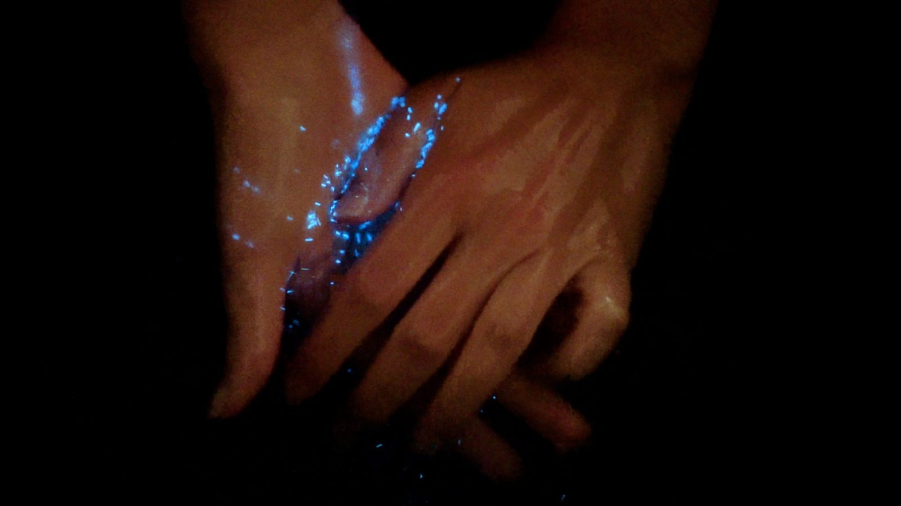
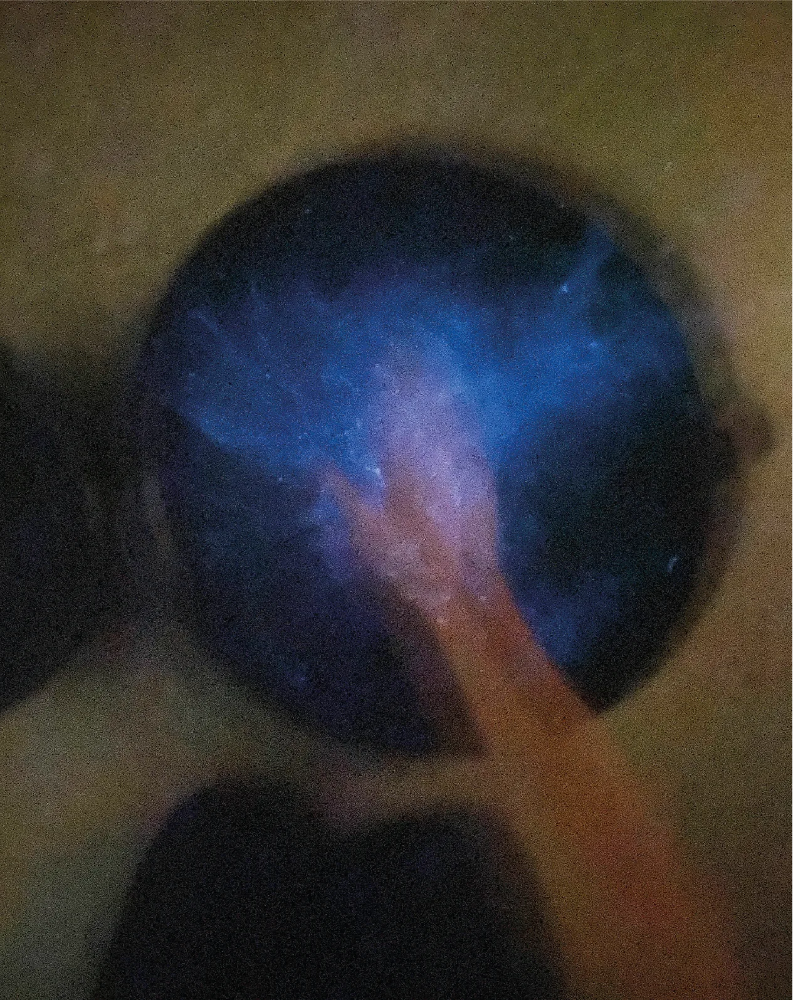

Designing Direct Interactions with Bioluminescent Algae explores direct interactions with dinoflagellates, bioluminescent algae that produce light when exposed to oxygen through physical stimulation. This work takes an organism-centered design approach, considering the well-being of the organism by focusing first on designing appropriate environments for the organism, then proceeding to explore the available interactions within these environments. The framework consists of four components (form, reception, feedback, and control) and can be used to guide designers in their design process with living matter.
This work demonstrates a design process that prioritizes first and foremost the nonhuman’s well-being, behaviors, and thriving requirements. As part of a new paradigm of design work within BioHCI and design research, this work encourages designers and researchers to gain a deep understanding of the agents involved in the design process, moving towards a posthuman, more-than-human design practice.
Published as a full paper at DIS 2021.

